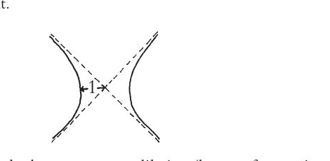
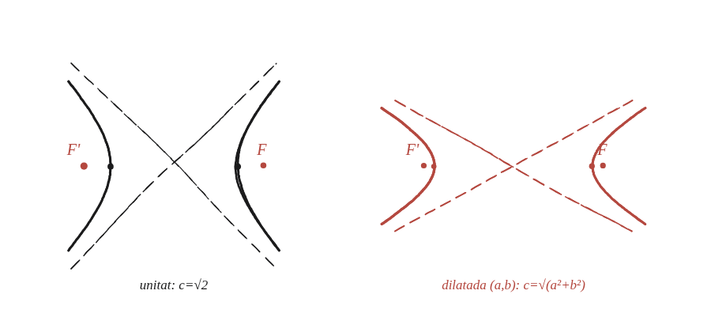

On són els focus d'una hipèrbola unitat? Què passa si la dilatem per factors a i b?

Provar primer el cas més senzill
El cas més senzill de tots és la hipèrbola unitat, x²−y²=1 (a=b=1). Trobant-hi els focus, la fórmula general per a qualsevol a, b hauria de reduir-se a aquest cas particular quan es posi a=b=1.
Un signe diferent del de l'el·lipse
A l'el·lipse (Qüestió 113), el focus queda "cap endins": c²=a²−b², amb c més petit que a. A la hipèrbola, les dues branques s'obren cap enfora, allunyant-se de l'eix curt en lloc d'envoltar-lo: el focus hi ha d'anar més lluny del centre que el vèrtex, no més a prop. Això suggereix que el signe hauria de ser una suma, no una resta: c² = a² + b². Ara bé, endevinar-ho i comprovar que quadra no és demostrar-ho, i aquí es pot demostrar. Al punt de la corba just damunt del focus, P=(c,h), la distància al focus proper és simplement h i la del llunyà surt de Pitàgores amb catets 2c i h. Imposant que la diferència valgui 2a i aïllant h, surt h=(c²−a²)/a; l'equació de la corba, per la seva banda, hi dona h²=b²(c²−a²)/a². Igualant les dues expressions queda c²−a²=b², és a dir c²=a²+b².

Comprovar-ho amb el cas unitat
Amb a=b=1: c=√(1²+1²)=√2 —un valor que sí és familiar (la diagonal d'un quadrat de costat 1), confirmant que el signe de suma és el correcte.
Generalitzar: per què l'estirament no serveix
Aquí hi ha la trampa gran de la pregunta. L'estirament de la Qüestió 112 —factor a en horitzontal, b en vertical— transforma bé la corba: els vèrtexs (±1,0) passen a (±a,0), que són els vèrtexs nous. Amb els focus, en canvi, no serveix: el punt on va a parar el focus antic no és el focus nou. Amb a=4 i b=3, el focus (√2,0) es transforma en (4√2, 0) ≈ (5,66; 0), mentre que el focus real de x²/16−y²/9=1 és (5,0).
La raó és que els focus no depenen només de la forma de la corba, sinó de distàncies, i un estirament que allarga més en una direcció que en l'altra no les conserva. Només quan a=b —quan l'escalat és uniforme, i per tant una homotècia com les de la Qüestió 77— els focus s'hi deixen portar. Per a la hipèrbola general cal, doncs, tornar a aplicar la relació c²=a²+b² amb els seus semieixos: els focus són a (±√(a²+b²), 0).
c² = a² + b² per a una hipèrbola —el signe oposat al de l'el·lipse (c²=a²−b²)—, perquè els focus d'una hipèrbola cauen més enllà dels vèrtexs, no entre ells. Amb a=b=1, la hipèrbola unitat, c=√2. Per a qualsevol altra cal aplicar de nou la relació amb els seus semieixos, i no transportar els focus amb l'estirament de la Qüestió 112: aquell estirament transforma bé la corba però no porta els focus als focus, i només ho fa quan a=b, que és quan resulta uniforme.
Comprovació
a=4, b=3: c=√(16+9)=5, focus a (±5,0) i vèrtexs a (±4,0) —el mateix triangle 3-4-5 que ja apareixia amb el rombe de la Qüestió 111. Pel camí llarg, amb el punt just damunt del focus: P=(5, 9/4) és a la corba (25/16 − (81/16)/9 = 1), la distància al focus proper (5,0) val 9/4 i la del llunyà (−5,0) val √(10²+(9/4)²) = 41/4, i la diferència és 41/4 − 9/4 = 8 = 2a. I la trampa, per contrast: 4√2 ≈ 5,66, que no és 5.